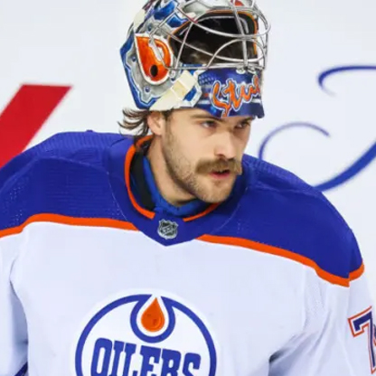

Team History
The Oilers were founded in 1971 by W. D. "Wild Bill" Hunter and Dr. Chuck Allard. They played their first season in 1972-73 as one of the twelve founding franchises of the major professional World Hockey Association (WHA).
NHL Origins of the Oilers
The Edmonton Oilers became part of the NHL in 1979 during the NHL-WHA merger. The Oilers joined the NHL for 1979-80, along with fellow WHA teams Hartford Whalers, Quebec Nordiques and the Jets following a merger agreement between the two leagues.
Major Milestones
The Oilers have achieved numerous milestones, including five Stanley Cup victories in the 1980s. Their first Stanley Cup win came in 1984, followed by championships in 1985, 1987, 1988, and 1990.
Legendary Players
Some of the great players in hockey history wore the Oilers jersey, including Wayne Gretzky, Mark Messier, Jari Kurri, Paul Coffey and Grant Fuhr. These players helped define the team's legacy in the NHL.
Current Roster
Forwards
The Oilers boast some of the most skilled forwards in the league, led by captain Connor McDavid, Leon Draisaitl, and Ryan Nugent-Hopkins. Their offensive prowess makes them a formidable force in the NHL.
Defensemen
The defense core is led by Evan Bouchard, Darnell Nurse and veteran Mattias Ekholm, an anchor on the blue line. These players are key players in maintaining a strong defense and puck control on the ice.
Goaltenders
In net, the Oilers rely on Stuart Skinner and backup goaltender Calvin Pickard to provide stability. Both goaltenders bring a blend of skill and experience, critical for the team's success in high-pressure situations.
2024-2025 Season
Key Matches
The season opener this year will be against the Winnipeg Jets at home on October 9th. The start of this year’s regular season is highly anticipated, with other key matchups including games against division rivals; Vancouver Canucks and of course, the Battle of Alberta against the Calgary Flames. Fans are eager to see how the Oilers will perform this season in their pursuit of capturing the Stanley Cup.
Statistics
Last year Connor McDavid (3rd) and Leon Draisaitl (7th) were both in the top ten in league points. Evan Bouchard (25th) and Zach Hyman (30th) also had strong years cracking the top thirty in league total points. This season expectations are high, and the fans are eager to see if the top players can elevate their play.
Playoff Predictions
With a strong lineup and momentum from last season, many analysts predict the Oilers will make a deep playoff run, with hopes of capturing their first Stanley Cup since 1990.
Edmonton Oilers Community Foundation 50/50 Raffles
As the largest 50/50 raffle in professional sports, fans in Alberta will have the chance to win big all season long. The record breaking 50/50 raffle will also raise important dollars for the EOCF to reinvest in the community.
Tickets will be available for purchase starting at 9:00 AM MT at the start of the raffle event and end at 11:00 PM MT on the last day of the 50/50 raffle event.
Tickets can be purchased by individuals 18 years or older, located within Alberta's provincial borders at the time of purchase. Follow Us on Social Media